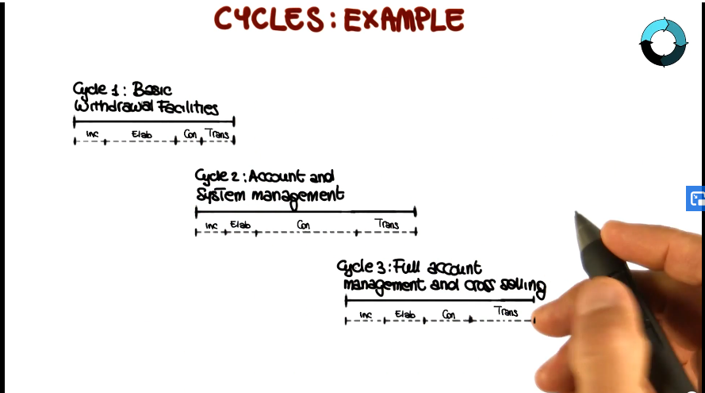
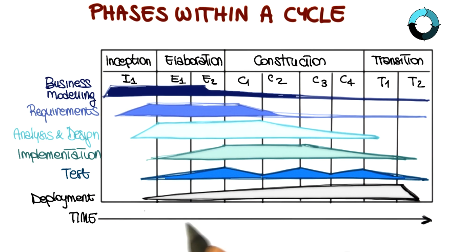

Software Dev Process Lecture Notes - Part 3 Lesson 4 - Unified Software Process
Unified Software Process
History of Rational Unified Process (RUP)
- In 1997, Rational defined six best practices for modern software engineering:
- Develop iteratively, focusing on risk
- Manage requirements
- Employ a component-based architecture
- Model software visually
- Continuously verify quality
- Control changes
Key Features of RUP
- Software process model
- Defines order of phases to be followed
- Prescribes transition criteria
- Component-based
- Software components are building blocks of software system
- Well-defined interfaces between these components
- Tightly related to UML
- relies extensively on UML for notation and basic principles
- Use-Case Driven
- Architecture-centric
- good way to understand - “use cases define the function of the system, while architecture defines the form”
- create rough outline of system
- key use cases -> subsystems
- Refine architecture using addtional use cases
- Iterative and incremental
- each cycle/increment results in a product release
- including documents, training, etc. all of it
- each cycle further divided into 4 phases
- Inception
- From idea to vision of end product
- Delimit project scope
- Business case for the product presented
- What are the major users and what will the system do for them? Simplified use case model
- What could be an architecture for the system? Tentative architecture
- What is the plan and how much will it cost? Main risks identified, rough planning
- Deliverables
- Vision document with general vision of the core project’s requirements, key features, and main cconstraints
- Initial use-case model
- Initial project glossary
- Initial business case
- Initial project plan and risk assessment
- Optionally, one or more prototypes
- Evaluation Criteria
- Stakeholder concurrence on scope, definition, and cost/schedule estimates
- Requirements understanding as evidenced by the fidelity of the primary use cases
- Credibility of the cost/schedule estimates, priorities, risks, and development process
- Depth and breadth of any prototype that was developed
- Project may be cancelled or considerably re-thought if it fails to pass this milestone
- Elaboration
- Analyze problem domain
- Establish architectural foundation
- Eliminate highest risk elements (address most critical use cases)
- Refine plan of activites and estimate
- Deliverables
- Almost complete use-case model
- Supplementary requirements, including non-functional requirements
- Software architecture
- Design model, test cases, executable prototype
- Revised project plan and risk assessment
- Preliminary user manual
- Evaluation Criteria
- Are vision and architecture stable?
- Does the protytpe show that the major risks have been addressed/resolved?
- Is the plan sufficiently detailed/accurate?
- Do all stakeholders agree that the vision can be achieved with the current plan?
- Is the actual resource expenditure versus planned expenditure acceptable?
- Project may be cancelled or considerably re-though if it fails to pass this milestone.
- Construction
- All features considered developed
- All features thoroughly tested
- Shift in emphasis from IP development to product development
- Deliverables
- All use cases realized, with traceability information
- Software product integrated on adequate platforms
- Complete system test results
- User manual
- Complete set of artifacts: desigtn, code, test cases, etc.
- Evaluation Criteria
- Is the product stable/mature enough to be deployed to users?
- Are the stakeholders ready for the transition into the user community?
- Are actual resource expenditures versus planned expenditures still acceptable?
- Transition may be postponed by one release if the project fails to pass this milestone.
- Transition
- Issues after deployment -> new release
- Training customer service and providing help-line assistance
- A new cycle may start
- Deliverables
- Project completed
- Product in use
- Lessons learned
- Plan for next release
- Evaluation Criteria
- Is the user satisfied?
- Are actual resource expenditures versus planned expenditures still acceptable?
* inside each phase there may be multiple iterations. each iteration corresponds to a set of use cases (aka set of features).
- Example:

- Work is distributed across each phase within a cycle

- Within each iteration, multiple steps are taken
- Identify relevant use cases
- Create a design
- Implement the design
- Verify code against use cases
- Release a product